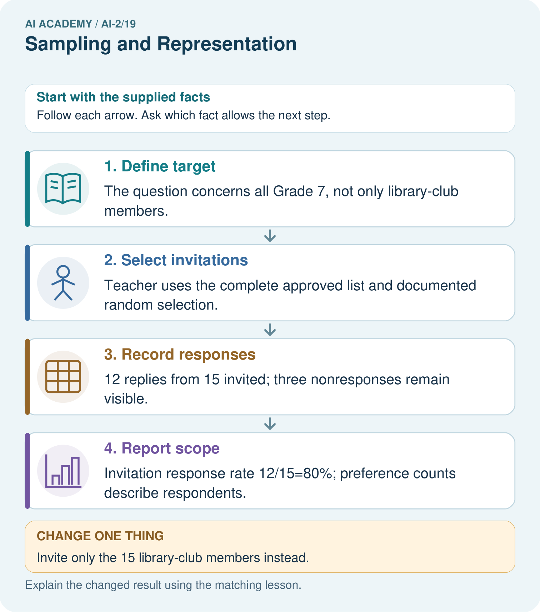

AI Academy · Level 2 · Grade 7 · Week 19 · Workbook
Sampling and Representation
Learn to understand, design, build, test and explain AI systems responsibly.
Project: Transparent Book Recommender
Workbook · 1 of 23
Recall and choose your starting point
Try the recall before opening notes. Then use a different colour or a labelled second line to correct your explanation.
Missing Data
Without opening the old lesson, explain one key idea from Missing Data. Give an example and a mistake that the idea helps you avoid.
Overfitting Intuition
Without opening the old lesson, explain one key idea from Overfitting Intuition. Give an example and a mistake that the idea helps you avoid.
Types of Classification Error
Without opening the old lesson, explain one key idea from Types of Classification Error. Give an example and a mistake that the idea helps you avoid.
Workbook · 2 of 23
Practise with fading help
Use W2: Read the sample result for Questions populations and samples. Record the answer once; the lesson and workbook refer to the same attempt.
| Given inputs | Procedure I chose | Middle steps | Result and check |
|---|---|---|---|
Workbook · 3 of 23
Individual reasoning check
Use the worked case for Questions populations and samples. Proposed explanation: “A successful run proves the conclusion”. Decide whether this explanation is supported. Point to the step or supplied fact that decides; explain your repair if needed.
Workbook · 4 of 23
Independent transfer case
Independent case: Plan independently
Design an anonymous sample plan to ask all Grade 7 about three activity choices. State population, sampling frame, selection method, question, and how you will report nonresponse.
Attempt this case before feedback. Record any help. Earlier examples below are further practice; a case already practised with feedback cannot establish fresh transfer.
Workbook · 5 of 23
Your learning target
A survey about school reading preferences includes only volunteers from a mystery club. Explain why 100 responses may still fail to represent the school. Propose a better sampling plan using fictional data.
Workbook · 6 of 23
Solve the given case
Only adventure-club members answer a school reading survey.
Explain the sampling problem.
Show your trace, calculation or evidence
Workbook · 7 of 23
Check a changed case
You survey only the chess club about all students' favourite books. Identify the sampling limitation and one improvement.
My independent answer and reason
Week 19 Test and reflect
Workbook · 8 of 23
Design a revealing test
Create a changed input, boundary case or missing-information case. Write the expected answer or safe response before testing.
| Test record | My evidence |
|---|---|
| Changed input or condition | |
| Expected answer or fallback | |
| Observed result | |
| Why the result occurred |
Workbook · 9 of 23
Project checkpoint
Test reader profiles across reading levels, genres, ages, formats, and accessibility needs.
The project change and evidence I will keep
Workbook · 10 of 23
Self check
I can explain the mechanism. I can show evidence. I can handle a changed case. I can name a limit. Mark each as not yet, with help or independently, and attach supporting work.
Teacher review ____________________ Next step ____________________
Workbook · 11 of 23
Transfer practice from the original programme
A survey about school reading preferences includes only volunteers from a mystery club. Explain why 100 responses may still fail to represent the school. Propose a better sampling plan using fictional data.
Record support used: none, hint or teacher explanation.
Workbook · 12 of 23
W1 Define the population
The question is whether all Grade 7 students prefer a longer lunch. Name the population and one unsuitable sample.
Workbook · 13 of 23
W2 Read the sample result
Seven of 12 fictional respondents prefer longer lunch. State the result without generalizing.
Workbook · 14 of 23
W3 Repair a claim
A report says all Grade 7 prefers coding after surveying only the coding club. Rewrite it.
Workbook · 15 of 23
W4 Plan independently
Design an anonymous sample plan to ask all Grade 7 about three activity choices. State population, sampling frame, selection method, question, and how you will report nonresponse.
Workbook · 16 of 23
W5 Separate invitation and response
Twenty students are selected fairly but only 8 answer. Does fair selection remove the need to report nonresponse?
Workbook · 17 of 23
Graphs and honest scales — W1 Read the scale
A bar is 6 squares long with 2 votes per square. How many votes is that?
Workbook · 18 of 23
Graphs and honest scales — W2 Compare fairly
Counts are 12 and 15. State the difference and ratio using the true values.
Workbook · 19 of 23
Graphs and honest scales — W3 Repair a misleading graph
Bars for 12 and 15 start at 10. Explain the misleading lengths and repair.
Workbook · 20 of 23
Graphs and honest scales — W4 Draw independently
Draw a bar chart for Music 6, Art 9, Coding 3. Include title, category labels, vote units, zero baseline and equal scale. State two supported comparisons.
Workbook · 21 of 23
Graphs and honest scales — W5 Limit the claim
Art has the most votes among 18 responses. Does that establish Art is best for learning?
Workbook · 22 of 23
Feedback, return check and learning record
| Evidence | My record |
|---|---|
| Worked alone / hint / model | |
| First step I repaired and why | |
| New case checked later; date and result | |
| What I can now explain without notes | |
| One remaining question |
Revisit this idea with your teacher after a delay. Familiarity is different from explaining and using it on a changed case.
Workbook · 23 of 23
Pictorial case practice: Sampling and Representation
A fictional Grade 7 class wants to understand book-format preferences across its whole grade.
Population: all 60 Grade 7 learners. Frame: current school-approved list of those 60, used only by the teacher.
Teacher randomly invites 15; 12 answer the same neutral comic/prose/either question. No names enter the analysis table.

Can 80% response be reported as 80% of the whole grade responding?
Support used: alone / hint / worked example. This record is practice evidence.
Project connection: Document whose requests inform the recommender and avoid treating an easily reached group as all intended users.